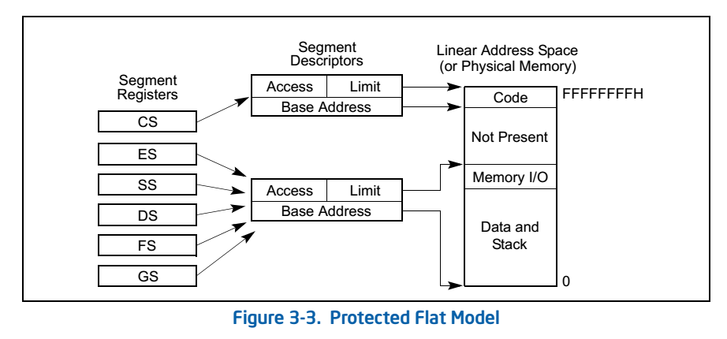
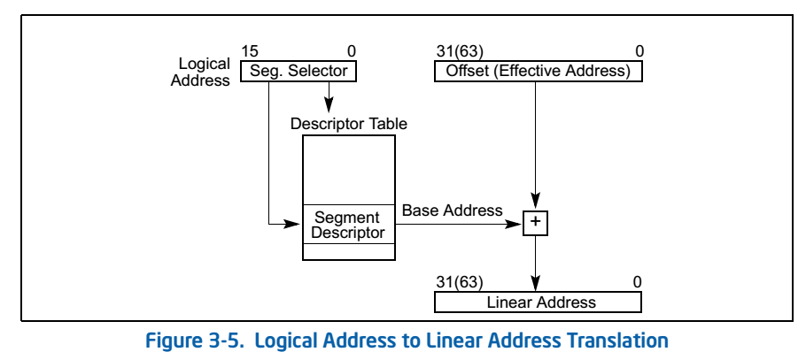
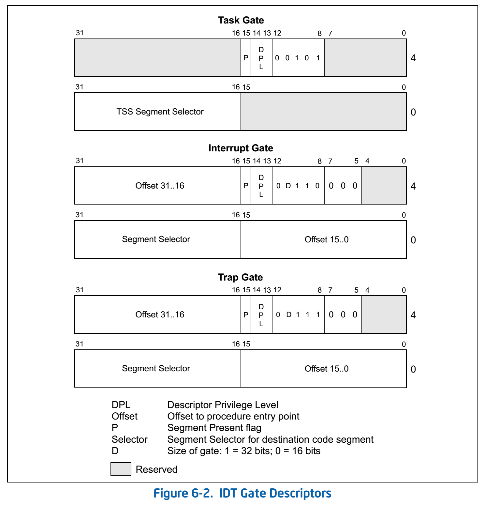
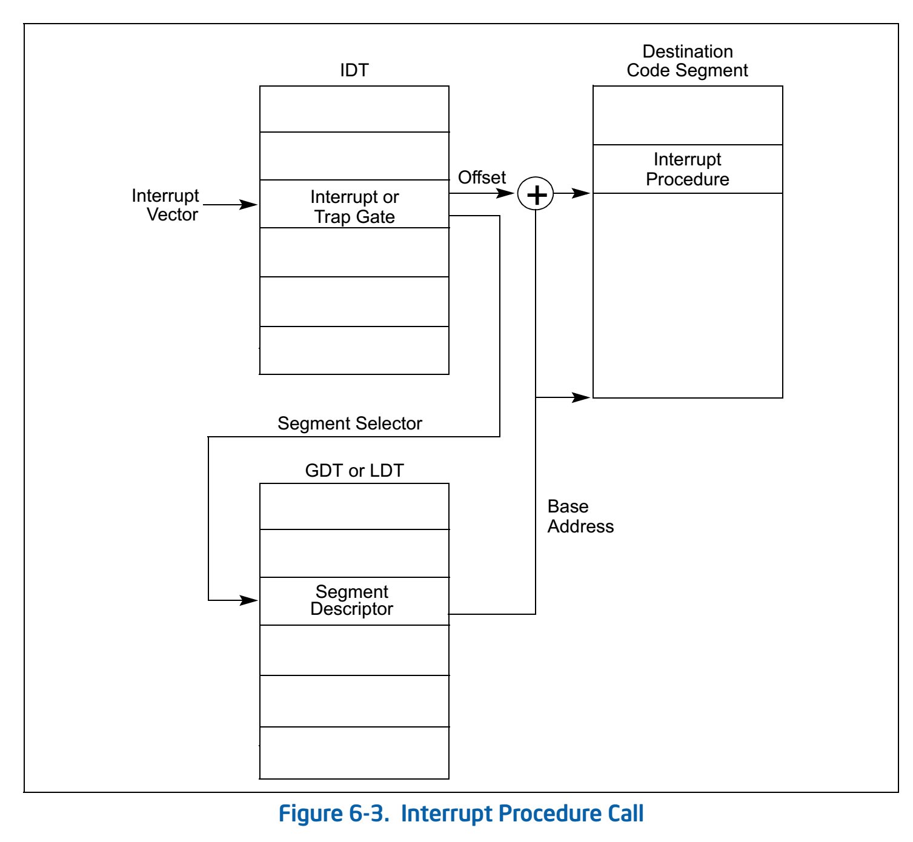
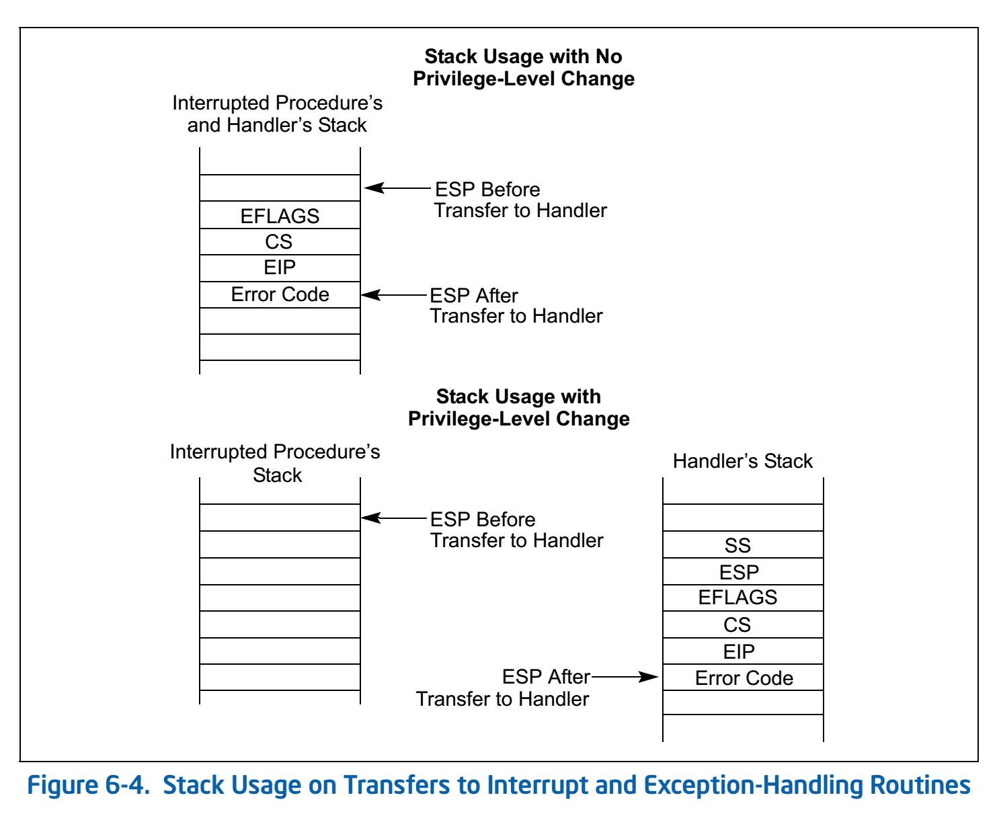

课程内容概述
这节课主要介绍了一些和Lab1相关的内容。
- 系统启动过程
- BIOS
- bootloader
- 段机制
- 操作系统的加载
- C语言的一些相关知识
- 函数调用的实现
- GCC内联汇编
- x86架构下的中断处理过程
系统启动过程
BIOS
BIOS的工作过程已经在《操作系统》第3讲：“启动、中断、异常和系统调用”总结中详细说过了，在此不再重复。唯一值得注意的是，虽然实模式下的寻址方式是Base（16位寄存器CS）* 16 + Offset（16位寄存器IP）=线性地址（20位），但是这并不是段机制。
bootloader
BIOS将控制权转交给bootloader（见lab1/boot文件夹下的内容）。它的工作内容主要包括：
- 使能保护模式（protection mode）和段机制（segment level protection），切换到32位4G的寻址空间，对段机制进行初始化
- 从硬盘上读取ELF格式的ucore kernel（位于MBR后面的扇区）并放到内存中固定位置
- 跳转到ucore OS的入口点（entry point），将控制权转交给ucore OS
使能保护模式
将系统寄存器CR0的第0个bit置为1，说明进入保护模式。当然，在此之前要开A20，并准备好GDT表，将基址加载到GDT基址寄存器中。
段机制
保护模式下必须开启段机制。所以讲一下段机制的原理。具体可以参见Intel80X86架构：保护模式下的内存管理。
总的来说，段机制其实是一种映射关系。一个段指向的是线性地址空间中一段连续的内存，有基址和limit。段与段之间是可以重叠的。
设置段机制的方法是，建立一个数组来存储段描述符表，称为全局描述符表GDT（也称为段表，在ucore中是由bootloader建立的，因为开启保护模式之前就需要设置好GDT），其中包括段描述符表的位置、大小等信息；这样CPU就可以找到段表了（用GDTR寄存器保存段表信息）。除了设置GDT之外，还要为CS、DS等段寄存器设置好对应的Index，使它们能够指向全局描述符表GDT对应的项，这可以在切换到保护模式之后进行。
硬件提供了一些段寄存器。这些段寄存器指向段描述符，比较重要的几个段寄存器包括：
- CS：代码段寄存器
- DS：数据段寄存器
- SS：堆栈段寄存器
段寄存器的结构是这样的：
- 高13位：GDT index
- 1位：TI，一般设置为0，因为没有用到LDT（本地描述符表）
- 2位：RP，表明段优先级，有4个特权级，一般应用程序放在3，操作系统放在0
每个段寄存器指向一个GDT或LDT中的段描述符。段描述符描述了一个段的起始地址和它的大小。（一个段描述符的大小是8字节，具体内容比较复杂，不过知道这两点差不多就够了）
uCore中采用的应该是Intel手册中提到的扁平保护模型。

在设置完所需的表和寄存器之后，段机制就可以完成从逻辑地址到线性地址（在页机制没有开启的时候，线性地址=物理地址）的翻译了。具体的翻译过程如下图：

- 通过逻辑地址中的段选择子查找段描述符表项
- 从表项中读出段基址和段的大小
- 检查逻辑地址中的offset是否合法
- 安全性检查（这里还没有讲到）
- 段基址（Base Address）+段内偏移量（offset）=线性地址（linear address）
操作系统的加载
操作系统的加载过程其实就是把ELF文件中的内容填到合适的位置。ELF文件的开头是一个ELF Header，结构如下：
1 | /* file header */ |
其中比较重要的变量是e_phoff（第一个Program Header的地址），e_phnum（文件中共有几个Program Header）和e_magic（用来检验该Header是否合法）。bootmain.c中的代码首先读一页（主引导扇区之后的8个扇区），得到ELF Header；然后，通过上述变量，可以依次访问各个Program Header。
1 | /* program section header */ |
然后通过每个Progeam Header中的ph->p_memsz（一个代码段的大小）和ph->p_offset（一个代码段的虚地址），可以从磁盘中读出对应内容，并存储到内存的对应位置（虚地址处）。
C语言的一些相关知识
函数调用的实现
- 将需要保存的寄存器入栈，调用函数，然后将需要保存的寄存器出栈
- EBP指向的是栈底，其中保存的是调用者的EBP；ESP指向的是栈顶；
- 调用时会把返回地址也入栈，在EBP下面，再下面是参数
其他注意事项：
- 参数和函数返回值可以通过寄存器或位于内存中的栈来传递
- 不需要保存/恢复（save/restore）所有寄存器（因为寄存器按传统分为caller save和callee save两类）
GCC内联汇编
内联汇编的完整格式如下：
1 | asm (assembler template // 字符串 |
例1：不带任何约束的简单内联汇编
内联汇编：
1 | asm("movl $0xffff, %%eax\n") |
生成的汇编：
1 | movl $0xffff, %eax |
例2：使用特定寄存器和约束的内联汇编
内联汇编代码：
1 | uint32_t cr0; |
生成的汇编代码：
1 | movl %cr0, %ebx |
其中关键字的含义如下：
volatile：不需要做进一步优化和调整顺序%0：第一个约束r：约束：GCC可以使用任意寄存器
例3：使用内联汇编触发系统中断
内联汇编代码：
1 | long __res, arg1=2, arg2=22, arg3=222, arg4=233; |
生成的汇编代码：
1 | movl $11, %eax |
其中约束条件的含义如下：
- a=%eax
- b=%ebx
- c=%ecx
- d=%edx
- S=%esi
- D=%edi
- 0=和第一个寄存器相同
x86架构下的中断处理过程
此处的“中断”包括两类：
- 中断（Interrupts）
- 外部中断（External (hardware generated) interrupts）：串口、硬盘、网卡、时钟
- 软件产生的中断（Software generated interrupts）：INT n指令，通常用于系统调用
- 异常（Exceptions）
- 程序错误
- 软件产生的异常（Software generated exception）：INTO，INT 3和BOUND
- 机器检查出的异常
通过中断号确定中断服务例程（ISR）
IDT是由操作系统分配的（Lab1的其中一个练习），在分配完空间并填充好IDT之后，需要用特权指令填充中断描述符表寄存器IDTR。
一般来说，每个中断或异常都有一个中断号，每个中断号与一个中断服务例程（Interrupt Service Routine，ISR）关联，其关联关系存储在中断描述符表（Interrupt Descriptor Table，IDT）中。IDT的每一项称为“中断门”或“陷阱门”。IDT的起始地址和大小保存在中断描述符表寄存器IDTR中，地址的表示也需要用到GDT（地址与段相关）。
IDT表中一般可能会含有三种门：中断门、陷阱门和任务门（目前没有用到），每一种门的格式如下：

可以看出，中断门和陷阱门的格式类似，其中的核心内容包括：
- 段选择子：16位，表示ISR所在的段
- 段内偏移量：32位，表示ISR地址在段内的偏移量
- DPL：用于进行安全性检查（现在还没用到）
可以看出，IDT表项实质上就是存储了很多ISR的逻辑地址。通过IDT和GDT（或LDT）访问ISR的过程如下图：

调用ISR和从ISR返回的过程
中断服务例程的调用和返回这个过程是非常重要的。因为它是用户态进程获得（或者强制进入）OS服务的唯一途径，所以需要进行现场的保存和特权级的切换。这个是非常重要的。
Intel手册6.12.1节“Exception- or Interrupt-Handler Procedures”中说，处理器调用中断服务例程的过程是这样的：
- 如果该中断服务例程将运行在一个更高的特权级下，则会发生栈切换，过程如下：
- 从当前执行任务的TSS中获得ISR将会使用的段选择子和栈指针，将被打断的程序的堆栈段选择子和栈指针压入新栈中
- 处理器随后将EFLAGS、CS和EIP寄存器的当前值也压入新栈中
- 如果异常有错误码，则将错误码也压入栈中，位于EIP寄存器的值之后
- 如果该中断服务例程的特权级不变：
- 处理器直接将EFLAGS、CS和EIP寄存器的当前值压入当前栈中
- 如果异常有错误码，则将错误码也压入栈中，位于EIP寄存器的值之后
下图展示了这一过程（注意栈是向下增长的）：

从中断服务例程返回时，必须使用IRET（或IRETD）指令。IRET指令类似于RET指令，但是它会对保存的寄存器和EFLAGS进行恢复（EFLAGS可能会进行一些修改）。如果调用中断服务例程时发生了栈切换，则IRET指令会在返回时切换回被打断的程序的栈。
系统调用
系统调用的实现方法是：
- 指定中断号
- 使用Trap
- 或使用特殊指令（SYSENTER/SYSEXIT）
练习
选择填空题
80386机器加电启动后，CPU立刻跳转到()执行
- ucore第一条指令
- bootloader第一条指令
- BIOS的第一条指令
- GRUB的第一条指令
加电后的第一条指令是长跳转指令，跳到BIOS去执行。
应用程序中的C函数调用中不需要用到()指令
- push
- ret
- iret
- call
iret用于中断服务例程返回。应用程序编写不需要用到IRET。
GCC内联汇编 asm(“movl %ecx, %eax”); 的含义是()
- 把 ecx 内容移动到 eax
- 把 eax 内容移动到 ecx
答案是把 ecx 内容移动到 eax。这是显然的AT&T汇编语法。
为了让系统正确完成80386的中断处理过程，操作系统需要正确设置()
- 全局描述符表
- 中断描述符表
- 中断服务例程
- 内核堆栈
在ucore处理中，上述几个都是要设置好的。显然ISR是必须准备好的。因为中断服务例程会使用内核栈，所以内核堆栈也要设置。发生中断时，硬件通过IDT找到中断号对应的中断描述符，再根据其中的ISR的逻辑地址，通过GDT或LDT得到ISR的线性地址。
简答题
段寄存器的字段含义和功能有哪些？
- 代码段寄存器 CS（Code Segment）存放当前正在运行的程序代码所在段的段基址，表示当前使用的指令代码可以从该段寄存器指定的存储器段中取得，相应的偏移量则由IP提供
- 数据段寄存器 DS（Data Segment）指出当前程序使用的数据所存放段的最低地址，即存放数据段的段基址
- 堆栈段寄存器 SS（Stack Segment）指出当前堆栈的底部地址，即存放堆栈段的段基址
- 附加段寄存器 ES（Extra Segment）指出当前程序使用附加数据段的段基址，该段是串操作指令中目的串所在的段
- 附加段寄存器 FS
- 附加段寄存器 GS
常用的就是CS、DS和SS。
描述符特权级DPL、当前特权级CPL和请求特权级RPL的含义是什么？在哪些寄存器中存在这些字段？对应的访问条件是什么？
参见DPL,RPL,CPL 之间的联系和区别一文中对特权级的表述。
- CPL是当前进程的权限级别(Current Privilege Level)，是当前正在执行的代码所在的段的特权级，存在于cs寄存器的低两位。
- RPL说明的是进程对段访问的请求权限(Request Privilege Level)，是对于段选择子而言的，每个段选择子有自己的RPL，它说明的是进程对段访问的请求权限，有点像函数参数。而且RPL对每个段来说不是固定的，两次访问同一段时的RPL可以不同。RPL可能会削弱CPL的作用，例如当前CPL=0的进程要访问一个数据段，它把段选择符中的RPL设为3，这样虽然它的CPL=0对该段仍然只有特权为3的访问权限。
- DPL存储在段描述符中，规定访问该段的权限级别(Descriptor Privilege Level)，每个段的DPL固定。
对数据段和堆栈段访问时的特权级控制：要求访问数据段或堆栈段的程序的CPL≤待访问的数据段或堆栈段的DPL，同时选择子的RPL≤待访问的数据段或堆栈段的DPL，即程序访问数据段或堆栈段要遵循一个准则：只有相同或更高特权级的代码才能访问相应的数据段。这里，RPL可能会削弱CPL的作用，访问数据段或堆栈段时，默认用CPU和RPL中的最小特权级去访问数据段，所以要求max{CPL, RPL} ≤ DPL，否则访问失败。
分析可执行文件格式elf的格式（无需回答）
- ELF header的格式
- proghdr的格式分析
中断处理中硬件压栈内容？用户态中断和内核态中断的硬件压栈有什么不同？
参见实验指导书中断与异常部分。当然，上面已经讲得非常详细了。
为什么在用户态的中断响应要使用内核堆栈？
保护中断服务例程代码的安全。
粗略地思考一下，虽然ISR需要在内核态下执行，使用用户态堆栈也不是不可以。代码安全这个我现在是想不清楚了。
trap类型的中断门与interrupt类型的中断门有啥设置上的差别？如果在设置中断门上不做区分，会有什么可能的后果?
调用Interrupt Gate时，Interrupt会被CPU自动禁止
调用Trap Gate时，CPU则不会去禁止或打开中断，而是保留它原来的样子
如果在设置上不做区分，会导致重复触发中断。
硬件中断是可以嵌套的，但指的并不是在处理一个硬件中断的过程中把这个过程打断，而是先关掉中断，处理完当前中断之后再顺序处理下一个。
在kdebug.c文件中用到的函数read_ebp是内联的，而函数read_eip不是内联的。为什么要设计成这样？
ebp可以直接获得，若不内联，则会因为函数调用对栈的修改而得到错误的ebp值。而由于没有直接获取eip值的指令，我们需要利用call指令将eip压栈的特性，通过调用read_eip函数来读出压在栈上的eip的值。若将read_eip内联，则不会有函数调用存在，无法获得eip的值。
1 | static __noinline uint32_t |
CPU加电初始化后中断是使能的吗？为什么？
不是。CPU启动后，BIOS会在POST自检完成后在内存中建立中断向量表和中断服务程序。
主要还是因为这个时候还在实模式下，根本没有处理普通中断的能力。不过，在实模式下，需要通过某些中断的手段来实现输入输出，这些方法都不能在保护模式下使用。
如何修改lab1, 实现在出现除零异常时显示一个字符串的异常服务例程？
在lab1/bin目录下，通过objcopy -O binary kernel kernel.bin可以把elf格式的ucore kernel转变成体积更小巧的binary格式的ucore kernel。为此，需要如何修改lab1的bootloader, 能够实现正确加载binary格式的ucore OS？ (hard)
GRUB是一个通用的bootloader，被用于加载多种操作系统。如果放弃lab1的bootloader，采用GRUB来加载ucore OS，请问需要如何修改lab1, 能够实现此需求？ (hard)
–
如果没有中断，操作系统设计会有哪些问题或困难？在这种情况下，能否完成对外设驱动和对进程的切换等操作系统核心功能？
课堂实践
在Linux系统的应用程序中写一个函数print_stackframe()，用于获取当前位置的函数调用栈信息。实现如下一种或多种功能：函数入口地址、函数名信息、参数调用参数信息、返回值信息。
在ucore内核中写一个函数print_stackframe()，用于获取当前位置的函数调用栈信息。实现如下一种或多种功能：函数入口地址、函数名信息、参数调用参数信息、返回值信息。